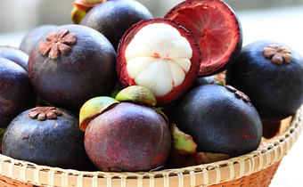
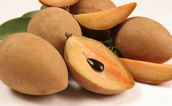
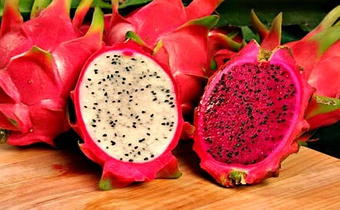
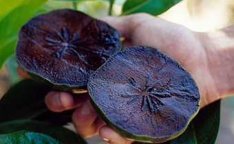
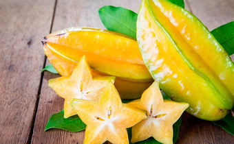
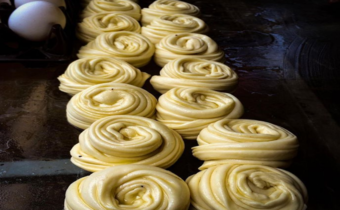
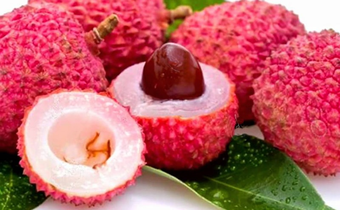
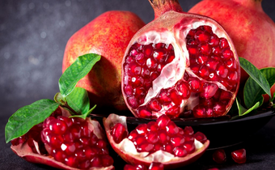
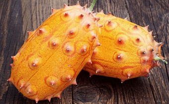

Мангустин
Росте він в Південній Азії, на території В’єтнаму, Таїланду, Індії. Дуже солодкий на смак. Служить основою для різних джемів, десертів, нектарів, сиропів і соків.

Чику (Саподіла)
Чику їдять сирою, відокремлюючи від шкірки і насіння. Фрукт має карамельний присмак, а деякі сорти — кавовий і шоколадний смак. Перед вживанням чику рекомендують охолодити.

Пітахайя
Можна їсти сирим, розрізавши навпіл і виїдаючи м’якоть ложкою. З фрукта готують десерти і соки, а м’якоть додають в салати і легкі страви. Знижує рівень цукру в крові.

Сапота
Незвичайний зовні, але оригінальний за смаком фрукт надзвичайно популярний в Центральній Америці та Мексиці. Головна фішка сапоти – шоколадний смак. Дійсно шоколадний!

Карамбола
Плід соковитий, хрусткий, відрізняється солодкістю і приємною легкою кислинкою з освіжаючим ефектом. У невеликому клаптику відчуваються нотки сливи, яблук, винограду, огірка та агрусу. Росте в Таїланді, Індії, Індонезії, Південній та Південно-Східній Азії.

Паротта
Південноіндійська випічка, яка разом з соусами та каррі стає чудовою вуличною їжею. Тісто для паротти замішують з борошна маіда, яєць та топленого вершкового масла (ґі).

Лічі
Вирощують в країнах Південно-Східної Азії, Африці та Америці. Фрукт досить соковитий і в міру солодкий – ідеально підходить для тамування спраги в полуденну спеку. Плоди лічі за смаковими якостями нагадують поєднання полуниці, смородини, кураги та білого винограду.

Гранат Еліт
Популярний екзотичний фрукт, батьківщиною якого прийнято вважати територію Середнього Сходу, Середземномор'я і Південну Америку. Відрізняється від звичайного насамперед великими розмірами – вага одного фрукта може досягати до 300 грамів. Має яскраво виражений кисло-солодкий смак, що нагадує вишневий.

Ківано
Росте в Африці, Південній Америці та на Антильських островах. Ківано має прекрасний освіжаючий смак і солодкуватий присмак. Свіжі плоди ківано нагадують присмак огірка і дині. Деякі види ківано злегка віддають лаймом і лимоном.